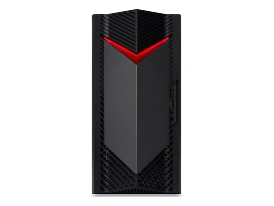
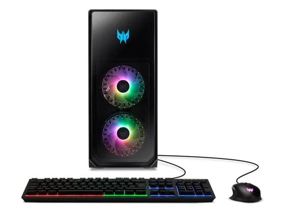
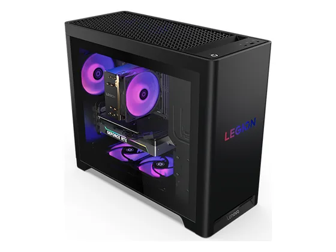
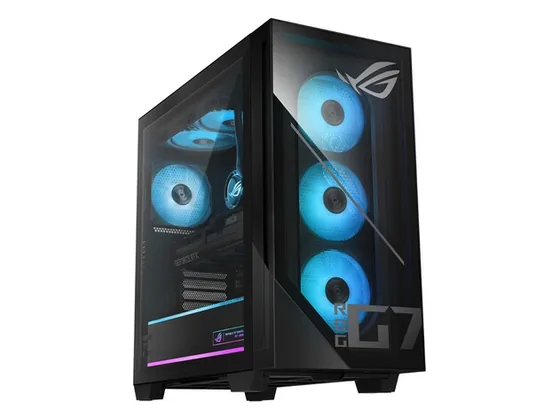

Le verdict en une phrase. La tour gaming la moins chère de la sélection avec une RTX 5060. Les générations précédentes ont été critiquées pour leur stockage et leur évolutivité.
N° 9 sur 10 dans le top 10 Ordinateurs de bureau gaming.

Vous voulez la tour gaming la moins chère possible avec une RTX 5060.
Vous comptez la faire évoluer.
Une seule note chiffrée à ce jour : 6,5/10, attribuée par PC Gamer. À lire comme un avis isolé, pas comme un consensus. Ces notes portent sur la gamme : configurations ou générations proches de celle vendue aujourd'hui.
La configuration peut différer d'un marchand à l'autre : vérifiez la fiche avant d'acheter. Liens d'affiliation : ils n'influencent ni les notes ni le classement.
Chaque ligne renvoie vers le test d'origine. Les notes sont converties sur 10 ; « test » signale un article sans note chiffrée. Notre méthode.
Source du relevé : Test PC Gamer.

Acer Predator Orion 7000Un grand châssis spectaculaire, beaucoup de puissance et de ports. Très lourd, encombrant et cher. N° 8 · Le bon rapport performances/prix
Lenovo Legion Tower 5 (Gen 10)Une tour très rapide pour son prix, surtout en 1080p et 1440p. CNET salue sa valeur, IGN regrette quelques choix de conception. N° 10 · La tour ROG
Asus ROG G700Une tour gaming rapide en toutes circonstances et très polyvalente, testée par le Labo Fnac.La note presse moyenne est de 6,5/10, calculée sur 1 note. La tour gaming la moins chère de la sélection avec une RTX 5060. Les générations précédentes ont été critiquées pour leur stockage et leur évolutivité.
Évolutivité limitée ; Composants d'entrée de gamme.
Vous voulez la tour gaming la moins chère possible avec une RTX 5060. À éviter si : vous comptez la faire évoluer.
Prix relevés le 02/10/2026 : 1 099,99 € chez Darty. Les prix changent vite et la configuration peut différer d'un marchand à l'autre : seul le prix affiché par le marchand fait foi.